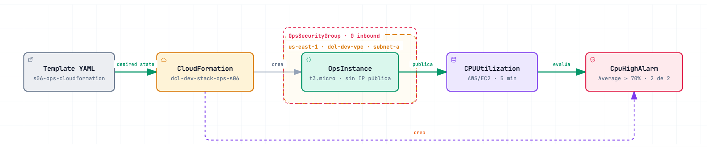
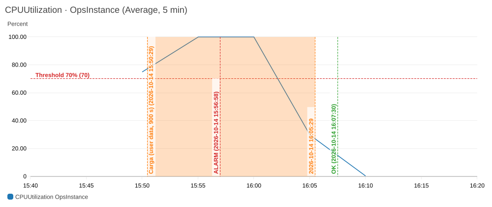

dcl-dev-stack-ops-s06CREATE_COMPLETE solo dice que CloudFormation terminó; el comportamiento se prueba con la cadena user data → carga → CPUUtilization → threshold → evaluación → ALARM, con timestamps. Update y delete también son operaciones sobre el mismo estado deseado.
| Hora | Evento | Evidencia |
|---|---|---|
| 15:50:20 | create-stack | Events: SG → EC2 → alarma (dependencias) |
| 15:50:29 | EC2 arranca; user data lanza 2 procesos CPU-bound (900 s) | Uno por vCPU del t3.micro |
| 15:50:46 | CREATE_COMPLETE | 26 s. Todavía no prueba comportamiento. |
| 15:51:58 | INSUFFICIENT_DATA → OK | El primer periodo incluía minutos antes del arranque (CPU ≈ 0) |
| 15:50 · 15:55 · 16:00 | CPUUtilization 75 · 100 · 100% | Average, periodos de 300 s |
| 15:56:58 | OK → ALARM | «2 out of the last 2 datapoints [100.0, 74.998] ≥ 70.0» |
| 15:58:34 | UPDATE_COMPLETE (v2) | Change set: Replacement: False; mismo InstanceId |
| 16:05 · 16:10 | CPUUtilization 30 · 0.2% | La carga termina a los 900 s |
| 16:07:30 | ALARM → OK | La alarma sigue a la causa, no al recurso |
| 16:12:48 | DELETE_COMPLETE | Sin EC2, EBS, SG ni alarma; baseline S01 intacto |

| Logical ID | Physical | Detalle |
|---|---|---|
| OpsSecurityGroup | sg-07c1… | 0 reglas inbound |
| OpsInstance | i-0260…3452 | t3.micro, sin IP pública, IMDSv2, basic monitoring, EBS gp3 cifrado |
| CpuHighAlarm | …-cpu-high | Average ≥ 70, Period 300, 2 de 2, sin acciones |
Parámetros: VpcId, SubnetId (baseline S01), AmiId (parámetro público de SSM), CpuThreshold, LabRevision.
AWS/EC2, dimensión, esperar el primer datapoint (5 min).DeleteOnTermination. Borrar a mano deja drift.